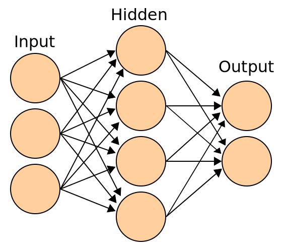
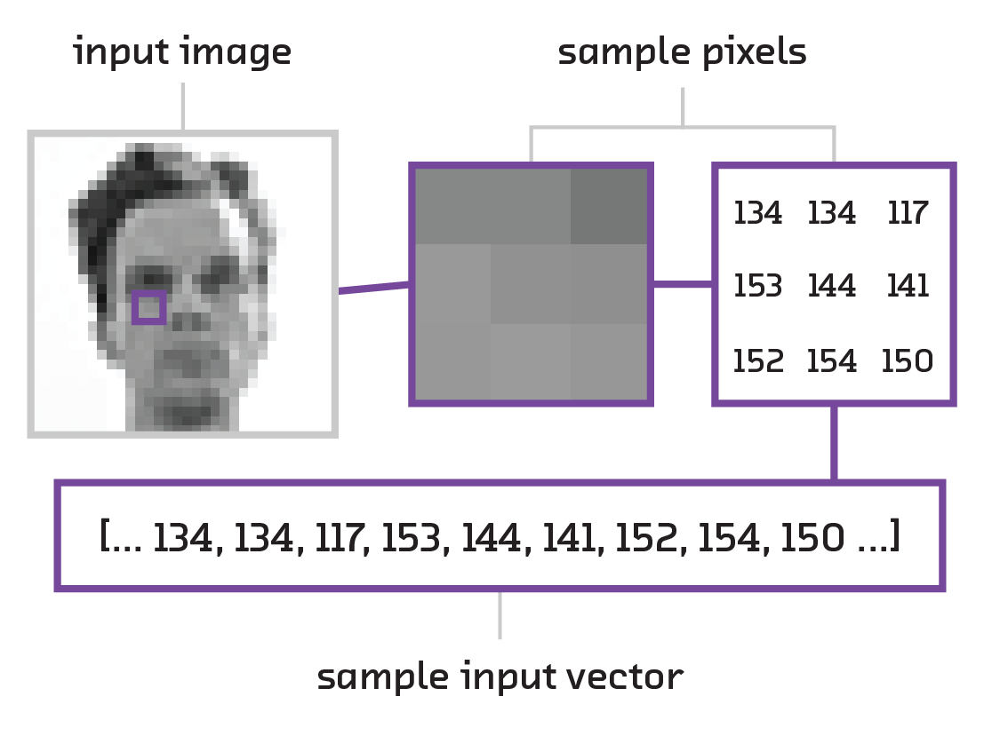
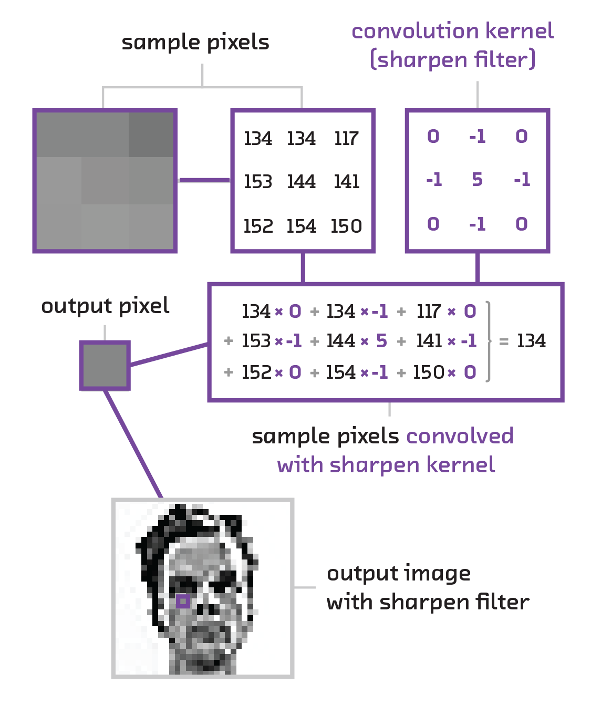

# This talk - A high-level, semi-technical introduction to neural networks - fully-connected feed-forward (i.e. regular) neural networks - how to implement them with keras - convolutional neural networks (images) - recurrent neural networks (language, time series) - selected further reading - Follow along - Slides (with links) [mike.place/talks/astrohackny](http://mike.place/talks/astrohackny) - `$ pip install keras seaborn sklearn jupyter` - <code>$ git clone [github.com/fastforwardlabs/keras-hello-world](https://github.com/fastforwardlabs/keras-hello-world/)</code> --- class: center, middle, full-bleed <img src="ff03-cover.png" style="width:24%"> --- # Neural networks - Logistic regression learns a mapping from features _X1_.._XN_ to a classification y - Can only learn linear relationships, unless you add cross terms _X1_ ⨉ _X2_, etc. - This is laborious, requires domain specific knowledge, and grows the parameter space exponentially - Feed-forward neural networks learn which cross terms are useful, reducing the parameter space while still allowing them to describe complex boundaries .center[] --- class: middle, split-30 .column[ ] .column[ ```python from keras.models import Sequential from keras.layers.core import Dense, Activation from keras.optimizers import SGD model = Sequential() model.add(Dense(input_dim=3, output_dim=4)) model.add(Activation("tanh")) model.add(Dense(output_dim=2)) model.add(Activation("softmax")) model.compile(loss='categorical_crossentropy', optimizer='sgd') model.fit(X_train, Y_train, nb_epoch=5, batch_size=32) ``` ] --- ## Convolutional neural networks .center[] --- class: center, middle  --- class: center, middle <img src="activationmap.jpeg" align="middle" width="100%"> --- class: full-bleed, middle, center <img src="pictograph-eg.png" width=100%> --- # Recurrent neural networks - Feed forward neural networks (including convolutional neural networks) cannot - take variable length sequences as input - remember - These are show-stoppers for most language tasks - Recurrent neural networks solve this <img src="RNN-unrolled.png" width="100%"> --- class: split-30 # Not as scary as they seem! .column[ <img src="scary.gif" style="width:80%"> ] .column[ - Difficult to intuit about structure and interpret results, which can be a show stopper - A fast moving subject, which means you still have to keep an eye on the arXiv 😞 - Computationally expensive (sometimes) - Powerful, which can be the difference between accomplishing a task and not - Robust, flexible and composable ] --- ### References Introduction - *Deep Learning* by LeCun et al. [go.nature.com/7cjbaa](http://go.nature.com/7cjbaa) - _Deep Learning_ by Goodfellow, Bengio and Courville [deeplearningbook.org](http://www.deeplearningbook.org/) Maths and optimization - The relevant lectures from Andrew Ng's Coursera course - Chapters 1-3 of Michael Nielsen's textbook, [neuralnetworksanddeeplearning.com](http://neuralnetworksanddeeplearning.com/) Intuition for backprop, CNNs and RNNs - Chris Olah's articles, [colah.github.io](http://colah.github.io/) Applications of CNNs and RNNs - [My solution for the Galaxy Zoo challenge](http://benanne.github.io/2014/04/05/galaxy-zoo.html) by Sander Dieleman - [*A Primer on Neural Network Models for Natural Language Processing*](http://u.cs.biu.ac.il/~yogo/nnlp.pdf) by Yoav Goldberg --- # Links - [mike.place/talks/astrohackny](http://mike.place/talks/astrohackny) - <mike@mike.place> - [@mikepqr](https://twitter.com/mikepqr)